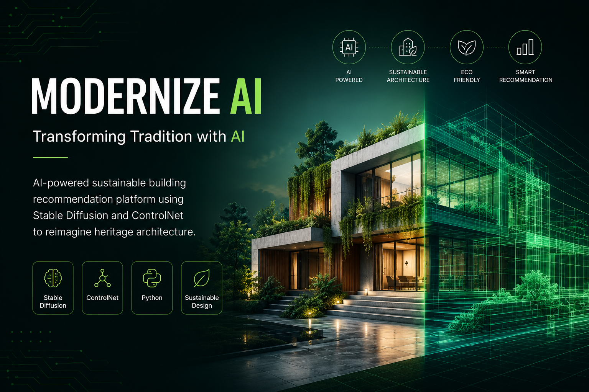
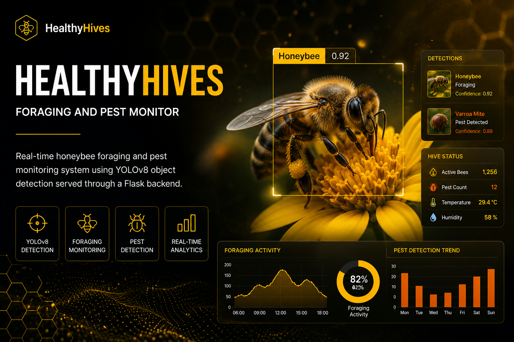
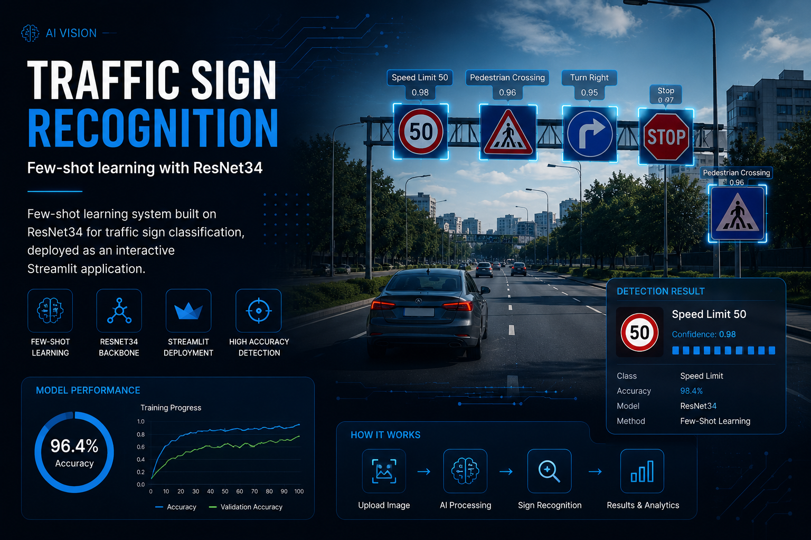
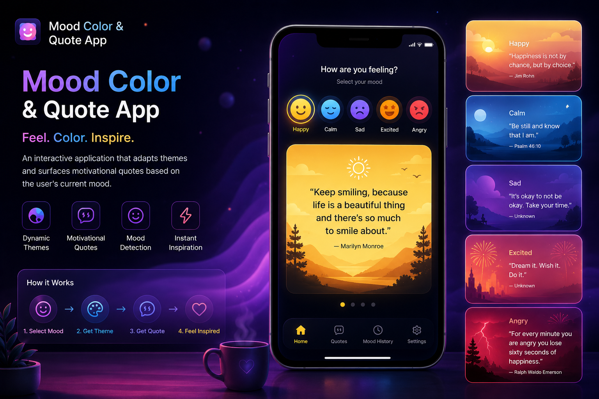

Open to AI/ML Engineer, Software Developer & Data Science Opportunities
Artificial Intelligence & Machine Learning Engineer
Artificial Intelligence and Machine Learning graduate with hands-on experience in Machine Learning, Deep Learning, Computer Vision, and Generative AI. Passionate about developing intelligent applications and transforming innovative ideas into real-world solutions through AI and modern technologies.
Featured Projects
CGPA
Technologies
AI/ML Internship
I am Ashwini B, a B.E. graduate in Artificial Intelligence and Machine Learning from Vivekananda College of Engineering and Technology, Puttur. My interests include Machine Learning, Deep Learning, Computer Vision, Generative AI, Python Development, and DevOps. I enjoy building intelligent systems that solve real-world problems through data-driven solutions and modern AI technologies. Through academic projects and internship experience, I have worked on Computer Vision systems, Traffic Sign Recognition, Honeybee Monitoring, Generative AI applications, and AI-powered web solutions. I am passionate about continuous learning, innovation, and creating technology that delivers meaningful impact. Currently, I am seeking opportunities to contribute, learn, and grow as an AI & Machine Learning Engineer.

AI-powered sustainable building recommendation platform using Stable Diffusion and ControlNet.

Real-time honeybee foraging and pest monitoring system using YOLOv8 and Flask.

Few-shot learning system built on ResNet34 for traffic sign classification.

Interactive application that adapts themes and surfaces motivational quotes based on user mood.
Open to full-time opportunities, internships, and collaborations in Artificial Intelligence, Machine Learning, Software Development, and Data Science.
📧 Email: ashwinimanila615@gmail.com
📱 Phone: +91 8618208538
📍 Mangalore, Karnataka, India
Download CV